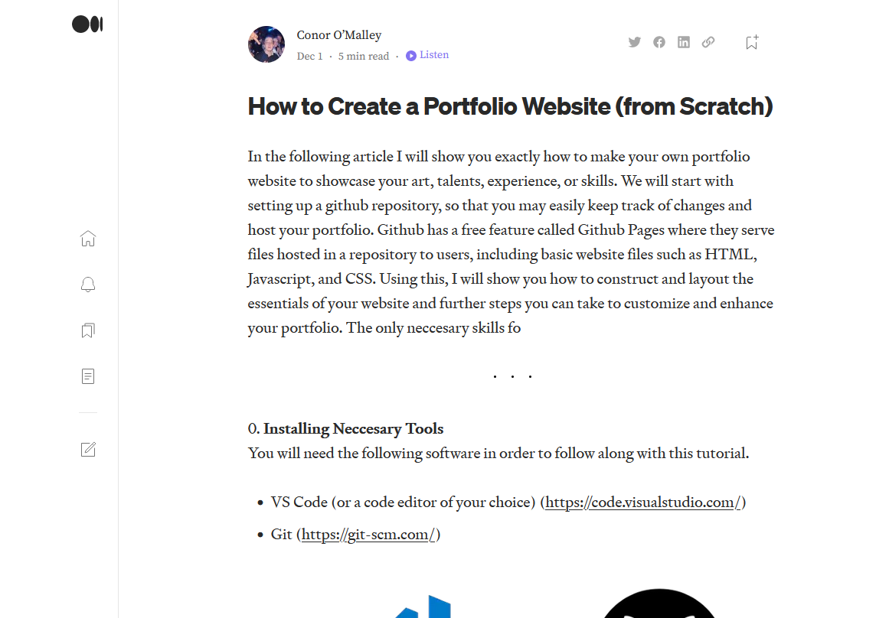

conorpo.github.io

 Made from scratch in HTML / CSS / Javascript
Made from scratch in HTML / CSS / Javascript


About Me
My name is Conor O'Malley,
I am a Software Engineer from Orlando, FL.
I work a variety of projects from little web expirments, to full realized applications. I am currently looking for work or internships at a company of any size to hone my skills and contribute to the tech industry.
My other passions include reading, film and televison, and videogames. I am also an avid rock climber and overall adventurer, and hope to travel around the world and explore its splendor.
And if you want to contact me, here is my card:
I am a Software Engineer from Orlando, FL.
I work a variety of projects from little web expirments, to full realized applications. I am currently looking for work or internships at a company of any size to hone my skills and contribute to the tech industry.
My other passions include reading, film and televison, and videogames. I am also an avid rock climber and overall adventurer, and hope to travel around the world and explore its splendor.
And if you want to contact me, here is my card:
Personal
ENC3241
CONTACT
Reflection
I think that my portfolio is coming together pretty nicely so far. Very happy with the layout and functionality thus far. I like my navigation system because I feel it is pretty unique, but not cumbersome enough to annoy users. My main gripe so far would probably be my font and text design. I feel that it breaks the illusion and vibe of the rest of my site. I was trying to go for a hand-drawn paper feel and the text really doesnt go with that. Developing the site has mainly challenged and improved my CSS abilities, even though most of my time has been taken up by creating the dynamic functionality in JavaScript. I guess my main question would be hoping to get your input on the text aswell as the navigation of the site. Did I take it too far with the "gamey" elements on the site or is it fine? What would be your best advicve on improving the look of the text? Other than that I'm pretty happy with the direction of my portfolio and I think I should be able to put the finishing touches on it before I officially submit. (Although I will probably end up working on it alot more even afterwards)
CLIMBING
This is an instructional article I wrote up that teaches readers how to create their portfolio site from scratch rather than using a website building tool. It was made as part of an assignment for ENC3241 - Writing for the Technical Professional. The article is hosted on Medium.com, a free blogging tool widely used in the tech industry.

This is a research grant proposal that I wrote which lays out the plans for research I would be doing involving the effect that Desert Exploration had on Military History. It was made as part of an assignment for ENC3241 - Writing for the Technical Professional. I just chose something I was passionate about to write about, I doubt that the University would really consider research like this.